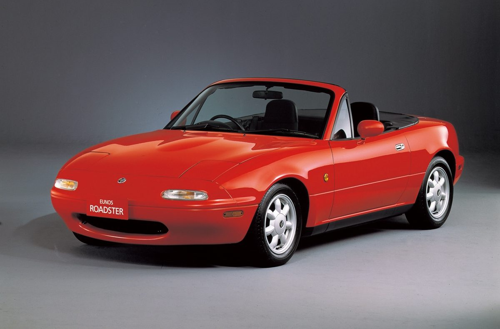
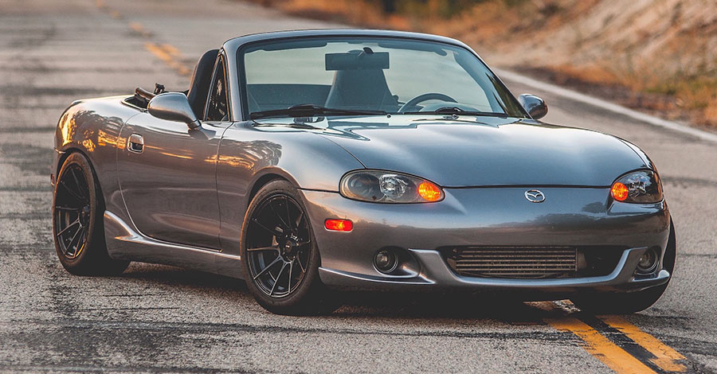

Az MX5 első generációja (a sorozatszám első két karaktere) az 1980-as évek végén jelent meg nehéz helyzetben a pókok és más európai roadsterek, vagy akár a biztonság és a szabványok oltáránál feláldozott kis angol roadsterek számára, amelyek egyre drakónikusabb szennyezésellenesek. Az Alfa Romeo Spider , amelyet már gyűjtői autónak tartanak, továbbra is egyedüli képviselője ennek a kategóriának. 1994-ben (különösen a belső téren) átformálták; az egyetlen 1,6 L 115 LE-s motort az 1,6 L 90 LE és az 1,8 L 130 LE váltotta fel . Ne felejtsük el az 1990-es évet és a 150 lóerős , 210 km / h körüli , angliai BBR Turbo Conversion Kitet .
Az első generációt, amely megelégelte magát a csupasz alapvető dolgokkal , az 1990-es évek közepén egy megújult stílusú, fix optikával rendelkező változat váltotta fel . Annak ellenére, hogy egyre növekszik a berendezés, amely továbbra is nehezíti és bonyolítja a globális gyártású járműveket, a Mazda mérnökeinek sikerült a súly növekedését száz kilogrammra korlátozni, annak ellenére, hogy a merevség megnőtt a készpénz. A motorok négyhengeres 1,6 L 110 LE vagy 1,8 L 140 LE teljesítményűek ..
